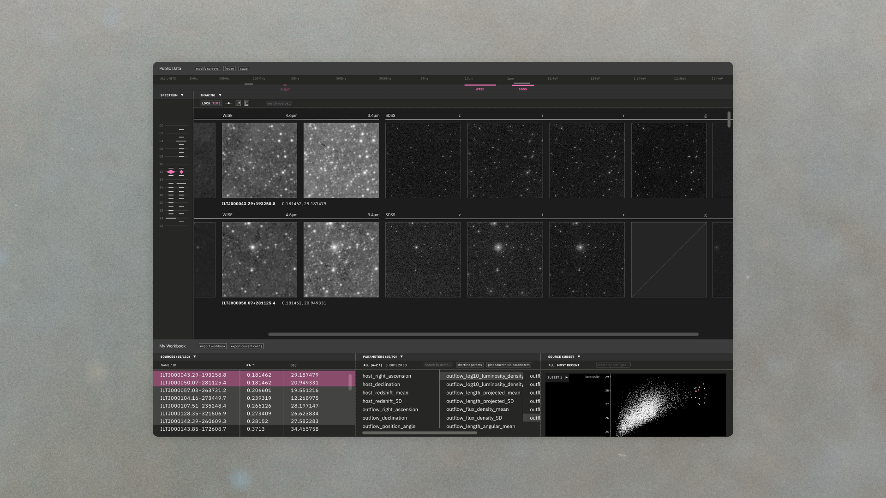

Mars 2020 Hindsight
A web-based interactive visualization tool that supports the Perseverance rover operations team in rapid retrieval of relevant drive data for planning and fault investigation.

Digital Sky Surveys
A user experience probe for Caltech astronomers navigating high-dimensional multiwavelength data.